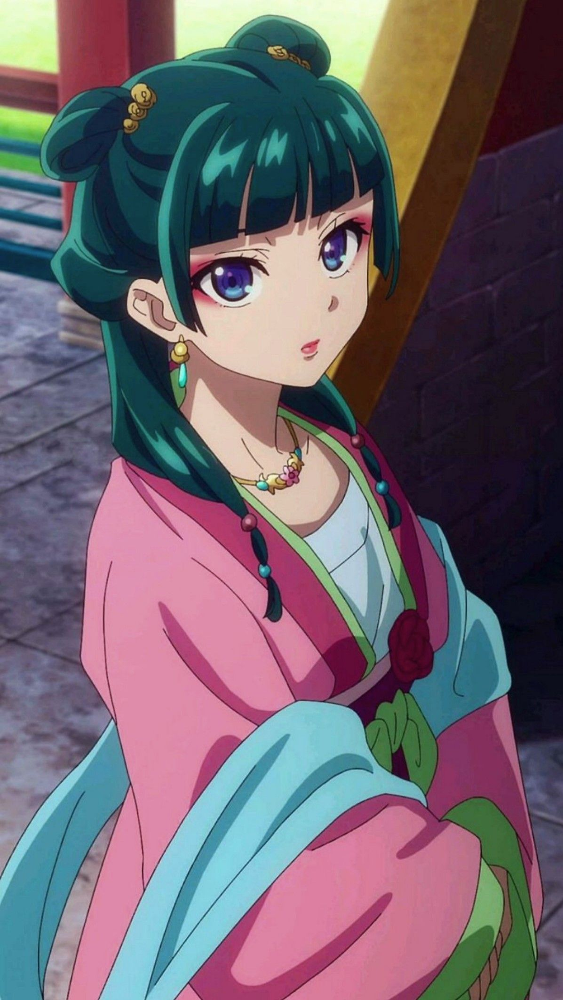
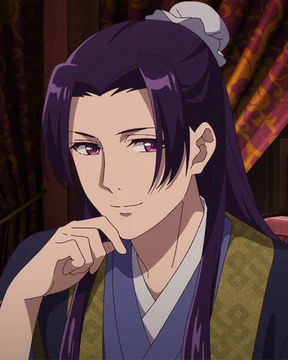
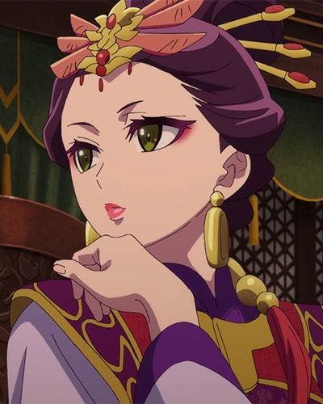
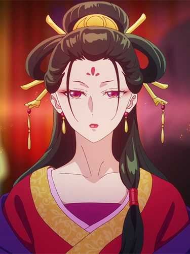
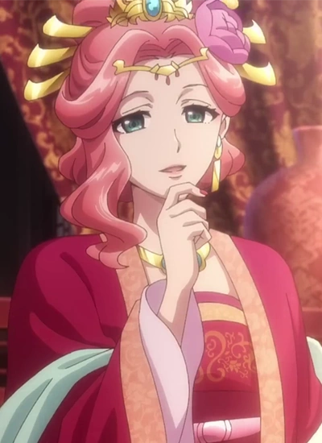
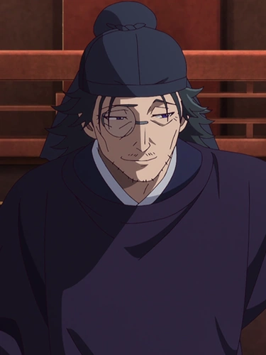

Personajes

Maomao (猫猫):
Boticaria inteligente y pragmática, con una fascinación por los venenos. Trabaja como sirvienta y, más tarde, como catadora de venenos de la Consorte Gyokuyo.

Jinshi (壬氏)
Apuesto eunuco de alto rango, influyente y misterioso, que se interesa por la inteligencia de Maomao y la emplea para resolver casos en el Palacio Interior.

Lady Loulan (楼蘭 )
Es un personaje secundario. Es miembro del Clan Shi y la segunda ex Consorte Pura del Pabellón Granate , sucediendo a Ah-Duo tras ser obligada a asumir el cargo por su padre, el Primer Ministro Shishou , para ganar influencia en la Corte Interior . Sin que muchos lo supieran, solía ir sin maquillaje y se hacía pasar por la sirvienta Shisui , y se hizo amiga de Maomao y Xiaolan , ocultando su verdadera identidad.

Lady Fengxian (鳳仙)
Es un personaje secundario. Era una cortesana de alto rango en la Casa Verdigris , hermana mayor de las Tres Princesas y madre biológica de Maomao . Se encontraba en la cuarta y última etapa de la sífilis y le quedaba poco tiempo, incluso siendo la esposa legal de su ex amante Lakan , algo de lo que quizá no sea consciente debido a su confusión.

Gyokuyou (フランドン)
Es un personaje secundario. Es miembro del Clan You , una de las Altas Consortes favoritas del Emperador de Li , madre de la Princesa Lingli y la primera maestra a la que sirvió Maomao . Al comienzo de la serie, Gyokuyou ostentaba el título de Consorte Preciosa del Pabellón de Jade. En el año nuevo, se convirtió en Emperatriz Consorte tras dar a luz al Príncipe Heredero .

Kan Lakan ( 羅漢ラカン )
Es un personaje secundario. Es un estratega de alto rango del ejército Li , líder del Clan La , padre biológico de Maomao y ex amante y esposo de Fengxian.